library(tidyverse)9 图层
9.1 引言
在 章节 1 中, 你学到的远不止如何制作散点图、条形图和箱线图。你 学习了利用ggplot2可以制作任何类型图形的基础知识。
在本章中你将在这个基础上进行扩展，学习图形的分层语法。首 先，我们将更深入地探讨美学映射、几何对象和切面。然 后，你将了解ggplot2在创建图形时背后进行的统计转换。这 些转换用于计算新的绘图值，例如条形图中的条形高度或箱线图的中位数。你 还将学习位置调整，这会修改几何对象在图表中的显示方式。最 后，我们将简要介绍坐标系。
我们不会涵盖这些图层中的每一个函数和选项，但我们将引导你了解ggplot2提供的最重要和最常用的功能，并向你介绍扩展ggplot2的包。
9.1.1 必要条件
本章重点介绍ggplot2。要 访问本章中使用的数据集、帮助页面和函数，请运行以下代码加载tidyverse:
9.2 美学映射
“图片的最大价值在于它能够迫使我们注意到我们从未预期到的内容。”
— John Tukey
请记住，ggplot2 包附带的 mpg 数据框包含了关于38种不同汽车型号的234条观测数据。
mpg
#> # A tibble: 234 × 11
#> manufacturer model displ year cyl trans drv cty hwy fl
#> <chr> <chr> <dbl> <int> <int> <chr> <chr> <int> <int> <chr>
#> 1 audi a4 1.8 1999 4 auto(l5) f 18 29 p
#> 2 audi a4 1.8 1999 4 manual(m5) f 21 29 p
#> 3 audi a4 2 2008 4 manual(m6) f 20 31 p
#> 4 audi a4 2 2008 4 auto(av) f 21 30 p
#> 5 audi a4 2.8 1999 6 auto(l5) f 16 26 p
#> 6 audi a4 2.8 1999 6 manual(m5) f 18 26 p
#> # ℹ 228 more rows
#> # ℹ 1 more variable: class <chr>mpg 中的变量包括:
displ: 汽车发动机的排量，单位为升。这 是一个数值型变量。hwy: 高速公路上汽车的燃油效率，以每加仑行驶的英里数（mpg）为单位。当 两辆汽车行驶相同的距离时，燃油效率低的汽车比燃油效率高的汽车消耗更多的燃油。这 是一个数值型变量。class: 汽车的型号。这 是一个分类变量。
让我们首先通过可视化不同车型类别（class）的排量（displ）和高速公路燃油效率（hwy）之间的关系来开始。我 们可以使用散点图来实现这一点，其中数值变量映射到 x 和 y 美学上，而分类变量则映射到color或shape等美学上。
# Left
ggplot(mpg, aes(x = displ, y = hwy, color = class)) +
geom_point()
# Right
ggplot(mpg, aes(x = displ, y = hwy, shape = class)) +
geom_point()
#> Warning: The shape palette can deal with a maximum of 6 discrete values because more
#> than 6 becomes difficult to discriminate
#> ℹ you have requested 7 values. Consider specifying shapes manually if you
#> need that many have them.
#> Warning: Removed 62 rows containing missing values or values outside the scale range
#> (`geom_point()`).![Two scatterplots next to each other, both visualizing highway fuel efficiency versus engine size of cars and showing a negative association. In the plot on the left class is mapped to the color aesthetic, resulting in different colors for each class. In the plot on the right class is mapped the shape aesthetic, resulting in different plotting character shapes for each class, except for suv. Each plot comes with a legend that shows the mapping between color or shape and levels of the class variable.](layers_files/figure-html/unnamed-chunk-4-1.png)
![Two scatterplots next to each other, both visualizing highway fuel efficiency versus engine size of cars and showing a negative association. In the plot on the left class is mapped to the color aesthetic, resulting in different colors for each class. In the plot on the right class is mapped the shape aesthetic, resulting in different plotting character shapes for each class, except for suv. Each plot comes with a legend that shows the mapping between color or shape and levels of the class variable.](layers_files/figure-html/unnamed-chunk-4-2.png)
当类别（class）映射到形状（shape）时，我们得到了两个警告：
1: 形状调色板最多只能处理 6 个离散值，因为超过 6 个值后就很难区分；但你有 7 个。如 果你必须使用它们，请考虑手动指定形状。
2: 删除了包含缺失值的 62 行（
geom_point()）。
由于 ggplot2 默认一次只会使用六个形状，因此当使用形状美学时，额外的组将不会被绘制。第 二个警告与此相关——数据集中有 62 辆 SUV，它们没有被绘制出来。
类似地，我们也可以将类别（class）映射到大小（size）或透明度（alpha）美学上，它们分别控制点的大小和透明度。
# Left
ggplot(mpg, aes(x = displ, y = hwy, size = class)) +
geom_point()
#> Warning: Using size for a discrete variable is not advised.
# Right
ggplot(mpg, aes(x = displ, y = hwy, alpha = class)) +
geom_point()
#> Warning: Using alpha for a discrete variable is not advised.

这两种方法都会产生警告:
不建议将alpha用作离散变量。
将一个无序的离散（分类）变量（如车型class）映射到一个有序的美学属性（如大小size或透明度alpha）通常不是明智之举，因为它暗含了一个实际上并不存在的排名。
一旦你映射了一个美学属性，ggplot2 就会处理其余部分。它 会选择一个合理的刻度来与这个美学属性一起使用，并构造一个图例来解释水平和值之间的映射关系。对 于 x 和 y 美学属性，ggplot2 不会创建图例，但会创建一个带有刻度线和标签的坐标轴线。坐 标轴线提供了与图例相同的信息；它解释了位置和值之间的映射关系。
你也可以通过几何对象函数的参数（在 aes() 之外）来手动设置你的几何对象的视觉属性，而不是依赖变量映射来确定外观。例 如，我们可以让我们的图形中的所有点都呈现蓝色：
ggplot(mpg, aes(x = displ, y = hwy)) +
geom_point(color = "blue")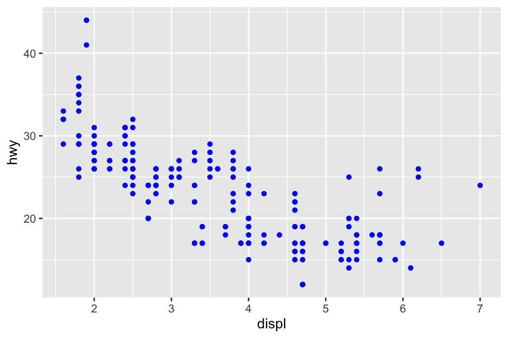
在这里颜色并不传达关于变量的信息，而只是改变图的外观。你 需要选择一个对该美学属性有意义的值：
- 颜色的名称作为字符串, 例如
color = "blue" - 点的大小以毫米为单位，例如
size = 1 - 点的形状作为一个数字，例如
shape = 1, 如图 图 9.1 所示。
![Mapping between shapes and the numbers that represent them: 0 - square, 1 - circle, 2 - triangle point up, 3 - plus, 4 - cross, 5 - diamond, 6 - triangle point down, 7 - square cross, 8 - star, 9 - diamond plus, 10 - circle plus, 11 - triangles up and down, 12 - square plus, 13 - circle cross, 14 - square and triangle down, 15 - filled square, 16 - filled circle, 17 - filled triangle point-up, 18 - filled diamond, 19 - solid circle, 20 - bullet (smaller circle), 21 - filled circle blue, 22 - filled square blue, 23 - filled diamond blue, 24 - filled triangle point-up blue, 25 - filled triangle point down blue.](layers_files/figure-html/fig-shapes-1.png)
color and fill aesthetics. The hollow shapes (0–14) have a border determined by color; the solid shapes (15–20) are filled with color; the filled shapes (21–24) have a border of color and are filled with fill. Shapes are arranged to keep similar shapes next to each other.
到目前为止，我们讨论了在使用点几何对象（point geom）创建散点图时可以映射或设置的美学属性。你 可以在https://ggplot2.tidyverse.org/articles/ggplot2-specs.html 的美学规范文档中了解更多关于所有可能的美学映射的信息。
你可以在一个图中使用的具体美学属性取决于你用来表示数据的几何对象（geom）。在 下一节中，我们将更深入地探讨几何对象。
9.2.1 练习
创建一个
hwy和displ的散点图，其中的点是粉红色填充的三角形。以下代码为什么没有生成带有蓝色点的图：
ggplot(mpg) + geom_point(aes(x = displ, y = hwy, color = "blue"))描边美学（stroke aesthetic）是做什么用的？它 与哪些形状一起工作？（ 提示：使用
?geom_point）如果你将美学映射到变量名之外的其他东西，比如
aes(color = displ < 5)，会发生什么？注 意，你还需要指定 x 和 y。
9.3 几何对象
下面两张图有什么相似之处？
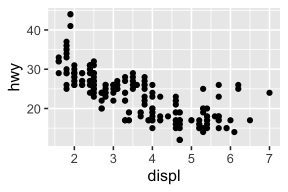
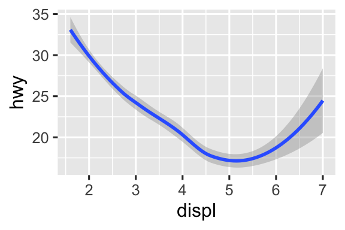
两张图包含相同的x变量和y变量，并且都描述了相同的数据。但 是，这两张图并不完全相同。每 张图都使用不同的几何对象（geom）来表示数据。左 侧的图使用了点几何对象（point geom），而右侧的图表使用了平滑几何对象（smooth geom），即用平滑线拟合到数据上。
要在你的图中更改几何对象（geom），请更改你添加到ggplot()函数中的几何对象函数。例 如，要绘制上述图可以使用以下代码：
# Left
ggplot(mpg, aes(x = displ, y = hwy)) +
geom_point()
# Right
ggplot(mpg, aes(x = displ, y = hwy)) +
geom_smooth()
#> `geom_smooth()` using method = 'loess' and formula = 'y ~ x'在ggplot2中，每个geom函数都接受一个映射参数，这个参数可以在geom图层中本地定义，也可以在ggplot()图层中全局定义。然 而，并不是每个美学属性（aesthetic）都适用于每个geom。你 可以设置点的形状，但你不能设置线的“形状”。如 果你尝试这样做，ggplot2会静默地忽略该美学映射。另 一方面，你可以设置线的线型。g eom_smooth()会根据你映射到线型变量的不同值，绘制具有不同线型的平滑线。
# Left
ggplot(mpg, aes(x = displ, y = hwy, shape = drv)) +
geom_smooth()
# Right
ggplot(mpg, aes(x = displ, y = hwy, linetype = drv)) +
geom_smooth()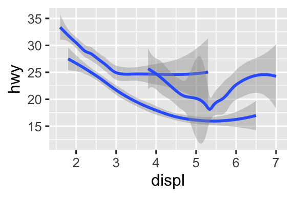
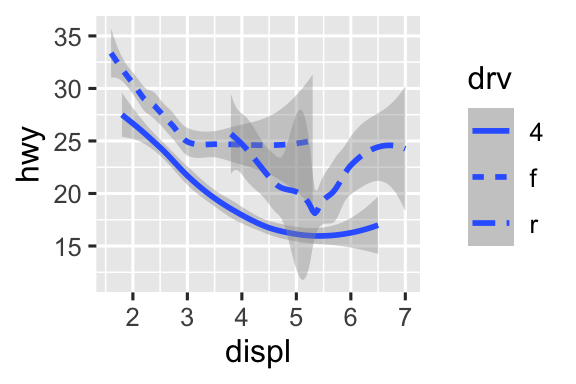
在这里，geom_smooth()根据汽车的drv值（描述了汽车的驱动方式）将汽车数据分成三条线。一 条线描述了所有值为4的点，一条线描述了所有值为f的点，还有一条线描述了所有值为r的点。在 这里，4代表四轮驱动，f代表前轮驱动，r代表后轮驱动。
如果这听起来有些奇怪，我们可以通过将这三条线叠加在原始数据上，并根据drv的值给所有内容上色，来使其更加清晰。
ggplot(mpg, aes(x = displ, y = hwy, color = drv)) +
geom_point() +
geom_smooth(aes(linetype = drv))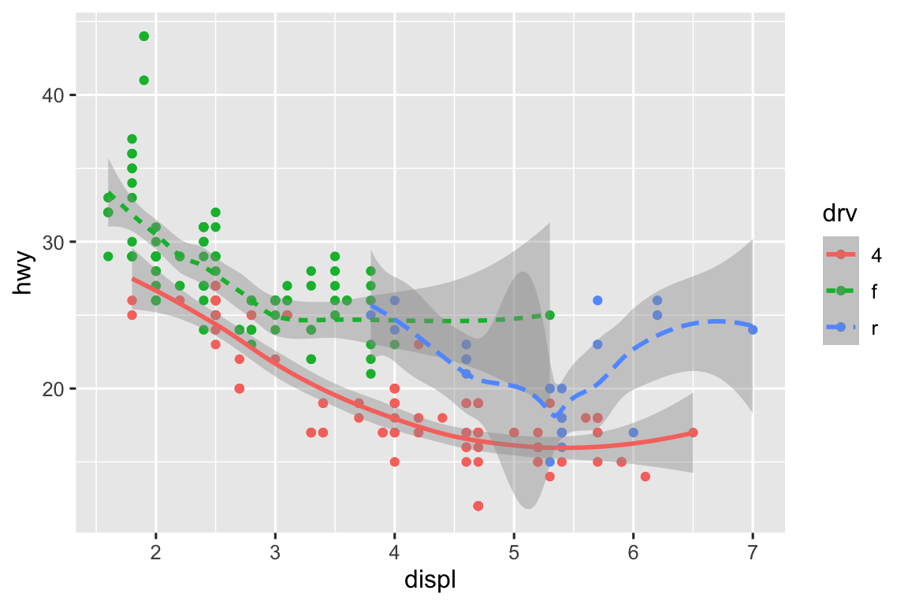
请注意，这个图在同一个图形中包含了两个几何对象（geoms）。
许多几何对象（如geom_smooth()）使用单个几何对象来显示多行数据。对 于这些几何对象，你可以将组（group）美学属性设置为分类变量来绘制多个对象。g gplot2会为分组变量的每个值绘制一个独立的对象。在 实践中，当你将美学属性映射到离散变量时（如线型示例），ggplot2会自动为这些几何对象分组数据。依 赖这个特性是很方便的，因为组（group）美学属性本身不会给几何对象添加图例或区分特征。
# Left
ggplot(mpg, aes(x = displ, y = hwy)) +
geom_smooth()
# Middle
ggplot(mpg, aes(x = displ, y = hwy)) +
geom_smooth(aes(group = drv))
# Right
ggplot(mpg, aes(x = displ, y = hwy)) +
geom_smooth(aes(color = drv), show.legend = FALSE)![Three plots, each with highway fuel efficiency on the y-axis and engine size of cars, where data are represented by a smooth curve. The first plot only has these two variables, the center plot has three separate smooth curves for each level of drive train, and the right plot not only has the same three separate smooth curves for each level of drive train but these curves are plotted in different colors, with a legend explaining which color maps to which level. Confidence intervals around the smooth curves are also displayed.](layers_files/figure-html/unnamed-chunk-13-1.png)
![Three plots, each with highway fuel efficiency on the y-axis and engine size of cars, where data are represented by a smooth curve. The first plot only has these two variables, the center plot has three separate smooth curves for each level of drive train, and the right plot not only has the same three separate smooth curves for each level of drive train but these curves are plotted in different colors, with a legend explaining which color maps to which level. Confidence intervals around the smooth curves are also displayed.](layers_files/figure-html/unnamed-chunk-13-2.png)
![Three plots, each with highway fuel efficiency on the y-axis and engine size of cars, where data are represented by a smooth curve. The first plot only has these two variables, the center plot has three separate smooth curves for each level of drive train, and the right plot not only has the same three separate smooth curves for each level of drive train but these curves are plotted in different colors, with a legend explaining which color maps to which level. Confidence intervals around the smooth curves are also displayed.](layers_files/figure-html/unnamed-chunk-13-3.png)
如果你在geom函数中放置映射，ggplot2会将这些映射视为该图层的本地映射。它 将使用这些映射来扩展或覆盖该图层的全局映射。这 使得在不同的图层中显示不同的美学属性成为可能。
ggplot(mpg, aes(x = displ, y = hwy)) +
geom_point(aes(color = class)) +
geom_smooth()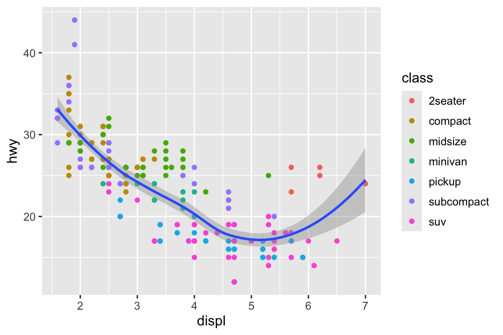
你可以使用相同的思路来为每一层指定不同的数据。在 这里，我们使用红色的点和空心的圆圈来突出显示两座车。g eom_point()中的局部数据参数（local data argument）仅针对那一层覆盖了ggplot()中的全局数据参数（global data argument）。
ggplot(mpg, aes(x = displ, y = hwy)) +
geom_point() +
geom_point(
data = mpg |> filter(class == "2seater"),
color = "red"
) +
geom_point(
data = mpg |> filter(class == "2seater"),
shape = "circle open", size = 3, color = "red"
)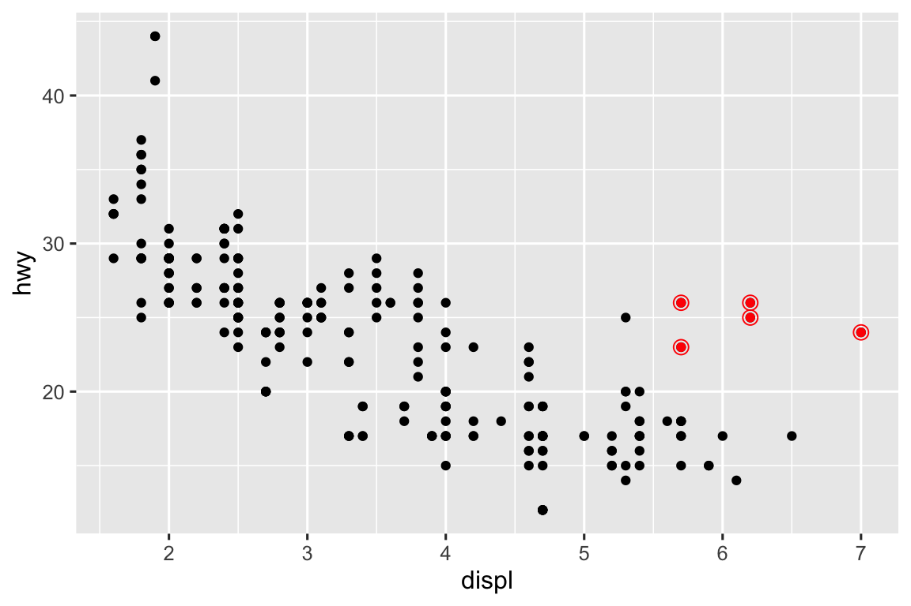
几何对象（geoms）是ggplot2的基本构建模块。你 可以通过改变图形的geom来完全改变其外观，而不同的geoms可以揭示数据的不同特征。例 如下面的直方图和密度图揭示了高速公路里程的分布是双峰的且向右偏斜，而箱线图则揭示了两个潜在的异常值。
# Left
ggplot(mpg, aes(x = hwy)) +
geom_histogram(binwidth = 2)
# Middle
ggplot(mpg, aes(x = hwy)) +
geom_density()
# Right
ggplot(mpg, aes(x = hwy)) +
geom_boxplot()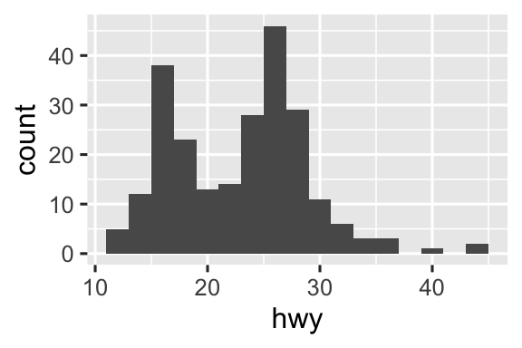
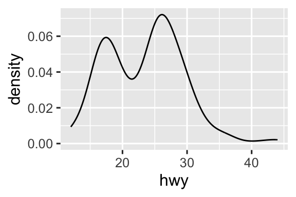
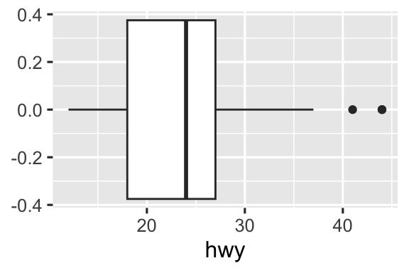
ggplot2提供了超过 40 个geoms，但这并不覆盖所有可能创建的图形。如 果你需要一个不同的geom，我们建议先查看扩展包，看看是否有人已经实现了它（可以在https://exts.ggplot2.tidyverse.org/gallery/找到一个示例）。例 如，ggridges包（https://wilkelab.org/ggridges）对于制作山脊线图（ridgeline plots）很有用，这种图可以用于可视化数值变量在不同类别变量水平下的密度。在 下面的图形中，我们不仅使用了一个新的geom（geom_density_ridges()），而且我们还将相同的变量映射到多个美学属性（drv到y、fill和color），并设置了一个美学属性（alpha = 0.5）以使密度曲线透明。
library(ggridges)
ggplot(mpg, aes(x = hwy, y = drv, fill = drv, color = drv)) +
geom_density_ridges(alpha = 0.5, show.legend = FALSE)
#> Picking joint bandwidth of 1.28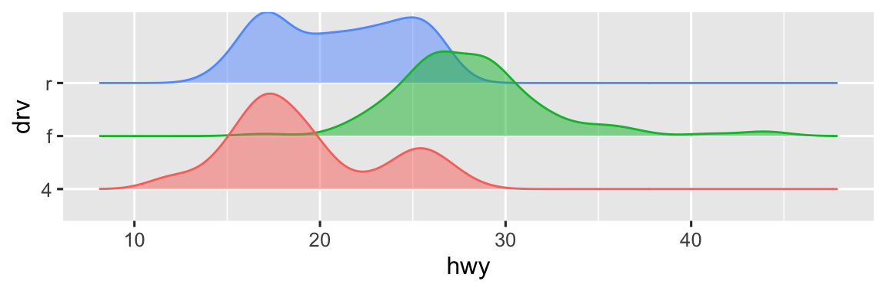
要了解ggplot2提供的所有geoms的全面概述以及包中的所有函数，最好的地方是参考https://ggplot2.tidyverse.org/reference。要 深入了解任何单一的geom，请使用帮助函数（例如 ?geom_smooth）。
9.3.1 练习
你会使用哪种
geom来绘制折线图？箱 线图？直 方图？面 积图？在本章的前面部分，我们使用了
show.legend而没有解释它：ggplot(mpg, aes(x = displ, y = hwy)) + geom_smooth(aes(color = drv), show.legend = FALSE)show.legend = FALSE在这里的作用是什么?如 果你把它去掉会怎么样?你 觉得我们之前为什么用它?geom_smooth()的参数se起什么作用?重新创建生成以下图形所需的R代码。 请注意，图中用到的分类变量的都是
drv。![There are six scatterplots in this figure, arranged in a 3x2 grid. In all plots highway fuel efficiency of cars are on the y-axis and engine size is on the x-axis. The first plot shows all points in black with a smooth curve overlaid on them. In the second plot points are also all black, with separate smooth curves overlaid for each level of drive train. On the third plot, points and the smooth curves are represented in different colors for each level of drive train. In the fourth plot the points are represented in different colors for each level of drive train but there is only a single smooth line fitted to the whole data. In the fifth plot, points are represented in different colors for each level of drive train, and a separate smooth curve with different line types are fitted to each level of drive train. And finally in the sixth plot points are represented in different colors for each level of drive train and they have a thick white border.](layers_files/figure-html/unnamed-chunk-19-1.png)
![There are six scatterplots in this figure, arranged in a 3x2 grid. In all plots highway fuel efficiency of cars are on the y-axis and engine size is on the x-axis. The first plot shows all points in black with a smooth curve overlaid on them. In the second plot points are also all black, with separate smooth curves overlaid for each level of drive train. On the third plot, points and the smooth curves are represented in different colors for each level of drive train. In the fourth plot the points are represented in different colors for each level of drive train but there is only a single smooth line fitted to the whole data. In the fifth plot, points are represented in different colors for each level of drive train, and a separate smooth curve with different line types are fitted to each level of drive train. And finally in the sixth plot points are represented in different colors for each level of drive train and they have a thick white border.](layers_files/figure-html/unnamed-chunk-19-2.png)
![There are six scatterplots in this figure, arranged in a 3x2 grid. In all plots highway fuel efficiency of cars are on the y-axis and engine size is on the x-axis. The first plot shows all points in black with a smooth curve overlaid on them. In the second plot points are also all black, with separate smooth curves overlaid for each level of drive train. On the third plot, points and the smooth curves are represented in different colors for each level of drive train. In the fourth plot the points are represented in different colors for each level of drive train but there is only a single smooth line fitted to the whole data. In the fifth plot, points are represented in different colors for each level of drive train, and a separate smooth curve with different line types are fitted to each level of drive train. And finally in the sixth plot points are represented in different colors for each level of drive train and they have a thick white border.](layers_files/figure-html/unnamed-chunk-19-3.png)
![There are six scatterplots in this figure, arranged in a 3x2 grid. In all plots highway fuel efficiency of cars are on the y-axis and engine size is on the x-axis. The first plot shows all points in black with a smooth curve overlaid on them. In the second plot points are also all black, with separate smooth curves overlaid for each level of drive train. On the third plot, points and the smooth curves are represented in different colors for each level of drive train. In the fourth plot the points are represented in different colors for each level of drive train but there is only a single smooth line fitted to the whole data. In the fifth plot, points are represented in different colors for each level of drive train, and a separate smooth curve with different line types are fitted to each level of drive train. And finally in the sixth plot points are represented in different colors for each level of drive train and they have a thick white border.](layers_files/figure-html/unnamed-chunk-19-4.png)
![There are six scatterplots in this figure, arranged in a 3x2 grid. In all plots highway fuel efficiency of cars are on the y-axis and engine size is on the x-axis. The first plot shows all points in black with a smooth curve overlaid on them. In the second plot points are also all black, with separate smooth curves overlaid for each level of drive train. On the third plot, points and the smooth curves are represented in different colors for each level of drive train. In the fourth plot the points are represented in different colors for each level of drive train but there is only a single smooth line fitted to the whole data. In the fifth plot, points are represented in different colors for each level of drive train, and a separate smooth curve with different line types are fitted to each level of drive train. And finally in the sixth plot points are represented in different colors for each level of drive train and they have a thick white border.](layers_files/figure-html/unnamed-chunk-19-5.png)
![There are six scatterplots in this figure, arranged in a 3x2 grid. In all plots highway fuel efficiency of cars are on the y-axis and engine size is on the x-axis. The first plot shows all points in black with a smooth curve overlaid on them. In the second plot points are also all black, with separate smooth curves overlaid for each level of drive train. On the third plot, points and the smooth curves are represented in different colors for each level of drive train. In the fourth plot the points are represented in different colors for each level of drive train but there is only a single smooth line fitted to the whole data. In the fifth plot, points are represented in different colors for each level of drive train, and a separate smooth curve with different line types are fitted to each level of drive train. And finally in the sixth plot points are represented in different colors for each level of drive train and they have a thick white border.](layers_files/figure-html/unnamed-chunk-19-6.png)
9.4 分面
在 章节 1 ，你学习了使用facet_wrap()进行分面，该方法可以将一个图形分割成子图，每个子图都基于一个分类变量显示数据的一个子集。
ggplot(mpg, aes(x = displ, y = hwy)) +
geom_point() +
facet_wrap(~cyl)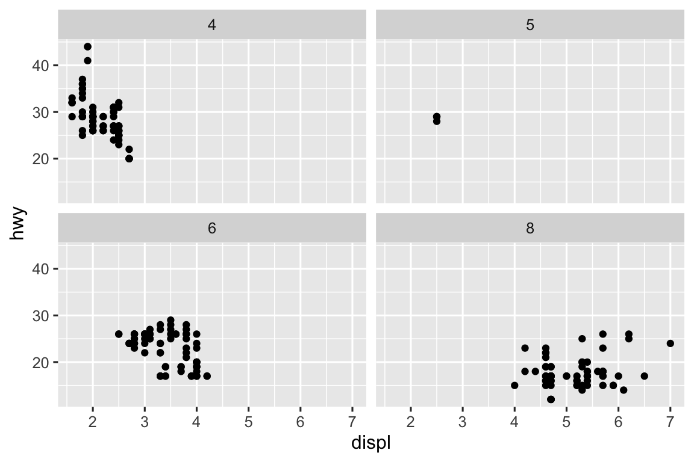
要使用两个变量的组合来对你的图形进行分面，你需要从facet_wrap()切换到facet_grid()。f acet_grid()的第一个参数也是一个公式，但现在它是一个双面公式：rows ~ cols。
ggplot(mpg, aes(x = displ, y = hwy)) +
geom_point() +
facet_grid(drv ~ cyl)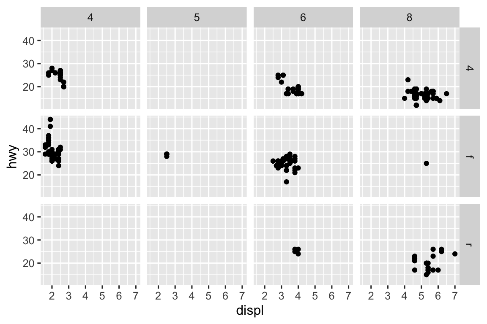
默认情况下，每个分面共享相同的x轴和y轴的刻度和范围。当 你想跨分面比较数据时，这很有用，但当你希望更好地可视化每个分面内的关系时，这可能会有所限制。将 分面函数中的scales参数设置为"free"将允许行和列之间使用不同的轴刻度，“free_x”将允许行之间使用不同的刻度，“free_y”将允许列之间使用不同的刻度。
ggplot(mpg, aes(x = displ, y = hwy)) +
geom_point() +
facet_grid(drv ~ cyl, scales = "free_y")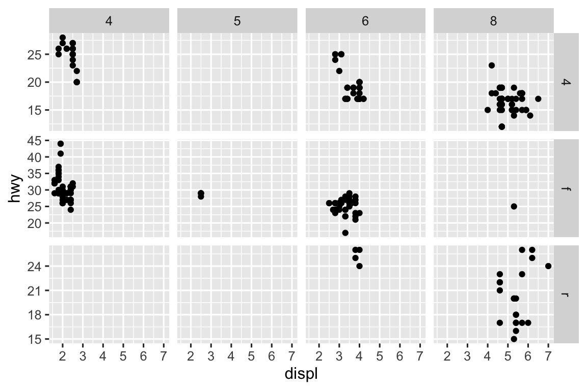
9.4.1 练习
如果你对一个连续变量进行分面会发生什么？
上面的图中使用
facet_grid(drv ~ cyl)生成的空单元格是什么意思？运 行以下代码，它们与生成的图有什么关系？ggplot(mpg) + geom_point(aes(x = drv, y = cyl))以下代码生成了什么样的图形？
.在这里代表什么？ggplot(mpg) + geom_point(aes(x = displ, y = hwy)) + facet_grid(drv ~ .) ggplot(mpg) + geom_point(aes(x = displ, y = hwy)) + facet_grid(. ~ cyl)查看本节中的第一个分面图：
ggplot(mpg) + geom_point(aes(x = displ, y = hwy)) + facet_wrap(~ class, nrow = 2)使用分面（faceting）而不是颜色美学（color aesthetic）的优势是什么？劣 势是什么？如 果你有一个更大的数据集，这种平衡可能会如何改变？
阅读
?facet_wrap的帮助文档，nrow是做什么的？ncol呢？还 有哪些选项控制单个面板的布局？为 什么facet_grid()没有nrow和ncol参数？下面的哪个图使得比较不同驱动方式的汽车的发动机排量（
displ）更容易？ggplot(mpg, aes(x = displ)) + geom_histogram() + facet_grid(drv ~ .) ggplot(mpg, aes(x = displ)) + geom_histogram() + facet_grid(. ~ drv)使用
facet_wrap()重新创建以下图形。这 时分面标签的位置如何变化？ggplot(mpg) + geom_point(aes(x = displ, y = hwy)) + facet_grid(drv ~ .)
9.5 统计变换
下面是一个用geom_bar()或geom_col()绘制的基本条形图，图形显示了diamonds数据集中按cut分组的钻石总数。d iamonds数据集位于ggplot2包中，包含约 54,000 颗钻石的信息，包括每颗钻石的价格（price）、重量（carat）、颜色（color）、净度（clarity）和切割方式（cut ）。图 形显示，高质量切割的钻石比低质量切割的钻石更多。
ggplot(diamonds, aes(x = cut)) +
geom_bar()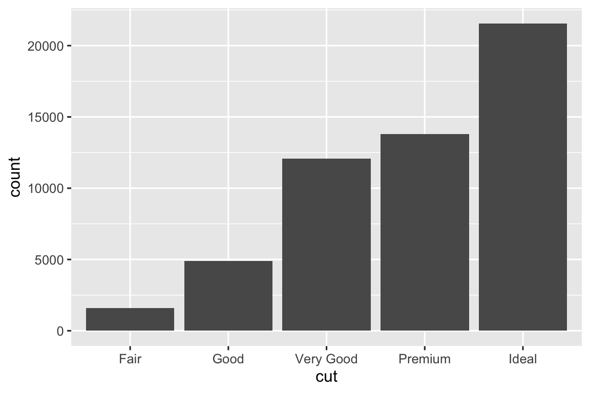
在 x 轴上图形显示了来自 diamonds 数据集的变量 cut。在 y 轴上显示了 count，但 count 并不是 diamonds 数据集中的变量！c ount 是从哪里来的？许 多图形，如散点图会绘制数据集的原始值。而 其他图形，如条形图则会计算新的值来绘制：
- 条形图、直方图和频数多边形会将数据进行分箱，然后绘制每个分箱中的点数（即分箱计数）。
- 平滑器（smoothers）会对您的数据拟合一个模型，然后绘制该模型的预测值。
- 箱线图会计算分布的五数汇总（five-number summary），然后以特殊格式的箱子显示该汇总。
用于计算图形新值的算法被称为 stat，是 statistical transformation（统计变换）的缩写。@ fig-vis-stat-bar 展示了 geom_bar() 是如何工作的。

你可以通过检查stat参数的默认值来了解一个geom使用的是哪种统计变换。例 如?geom_bar显示stat的默认值是”count”，这意味着geom_bar()使用的是stat_count()。s tat_count()的文档与geom_bar()在同一页面。如 果你向下滚动，名为“Computed variables”的部分说明它计算了两个新变量：count和prop。
每个geom都有一个默认的统计变换；每个统计变换也有一个默认的geom。这 意味着你通常可以使用geoms而不用担心底层的统计变换。然 而，在三种情况下你可能需要指明使用何种统计变换：
你可能想要覆盖默认的统计变换。在 下面的代码中，我们将
geom_bar()的统计变换从默认的count更改为identity。这 样我们就可以将条形的高度映射到 y 变量的原始值。diamonds |> count(cut) |> ggplot(aes(x = cut, y = n)) + geom_bar(stat = "identity")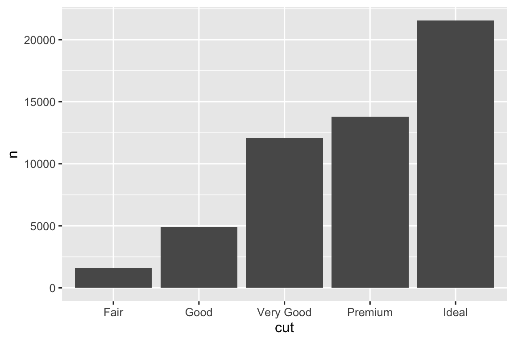
你可能想要覆盖从变换后的变量到视觉属性的默认映射。例 如，你可能想要显示一个比例条形图，而不是计数条形图：
ggplot(diamonds, aes(x = cut, y = after_stat(prop), group = 1)) + geom_bar()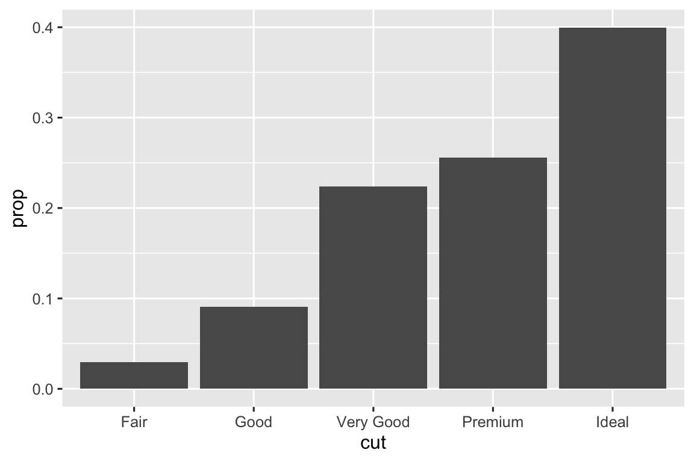
要找到可以由统计变换计算的可能的变量，请在
geom_bar()的帮助文档中寻找标题为“computed variables”的部分。你可能希望在你的代码中更加关注统计变换。例 如你可能使用
stat_summary()，它对每个唯一的 x 值汇总 y 值，以此来强调你正在计算的汇总统计量：ggplot(diamonds) + stat_summary( aes(x = cut, y = depth), fun.min = min, fun.max = max, fun = median )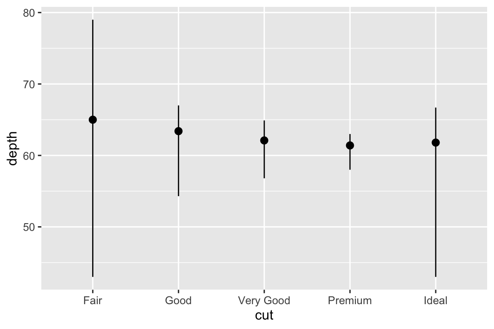
ggplot2 提供了超过 20 种统计变换。每 个统计变换都是一个函数，所以你可以通过常规方式获取帮助，例如使用?stat_bin。
9.5.1 练习
stat_summary()的默认geom是什么？如 何使用这个geom函数而不是stat函数来重写前面的图形？geom_col()是做什么的？它 与geom_bar()有什么不同？大多数geoms和stats都是成对出现的，它们几乎总是协同工作。请 列出所有这些对子。它 们有什么共同点？（ 提示：阅读文档。）
stat_smooth()函数计算哪些变量？哪 些参数控制其行为？在我们的比例条形图中，我们需要设置
group = 1。为 什么呢？换 句话说，这两个图有什么问题？ggplot(diamonds, aes(x = cut, y = after_stat(prop))) + geom_bar() ggplot(diamonds, aes(x = cut, fill = color, y = after_stat(prop))) + geom_bar()
9.6 位置调整
与条形图相关的还有一个神奇的特性。你 可以使用颜色美学（color aesthetic）来为条形图上色，但更有用的是，你还可以使用填充美学（fill aesthetic）来为条形图上色：
# Left
ggplot(mpg, aes(x = drv, color = drv)) +
geom_bar()
# Right
ggplot(mpg, aes(x = drv, fill = drv)) +
geom_bar()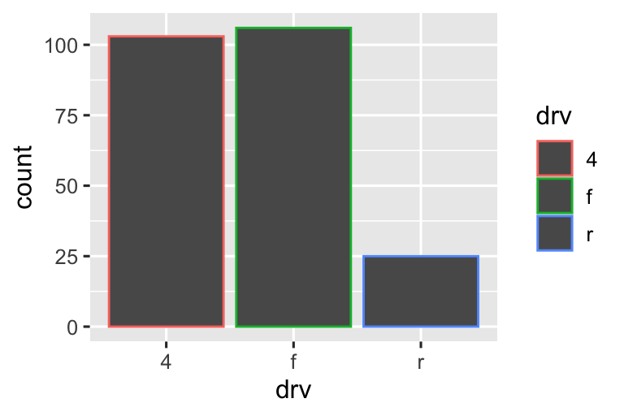
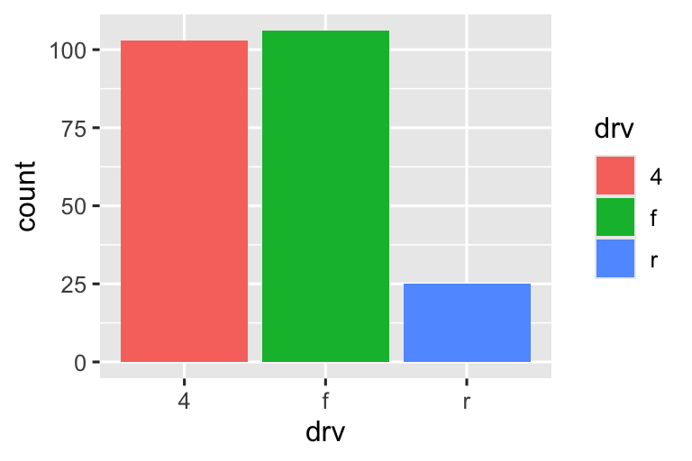
请注意，如果你将填充美学映射到另一个变量，比如class，条形图会自动堆叠。每 个彩色矩形代表drv和class的一个组合。
ggplot(mpg, aes(x = drv, fill = class)) +
geom_bar()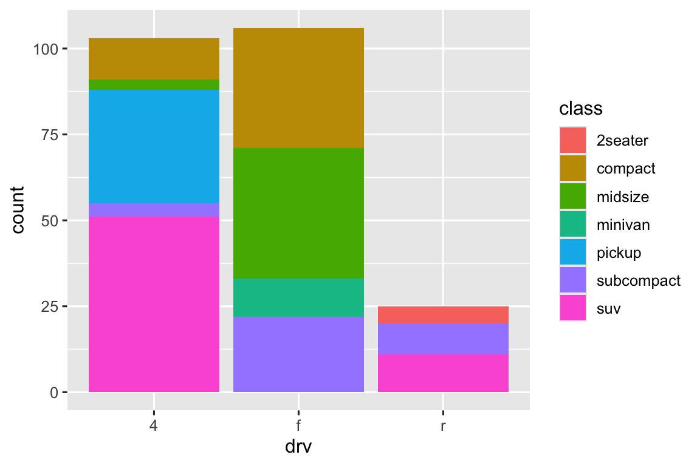
堆叠是通过由position参数指定的位置调整（position adjustment）自动执行的。如 果你不想创建堆叠条形图，你可以使用以下三种选项之一："identity"、"dodge" 或 "fill"。
position = "identity"会将每个对象精确地放置在其在图中的位置。这 对于条形图来说不是很有用，因为它会使它们重叠。为 了看到这种重叠，我们需要将条形设置为稍微透明，通过将alpha设置为一个小值，或者通过设置fill = NA使其完全透明。# Left ggplot(mpg, aes(x = drv, fill = class)) + geom_bar(alpha = 1/5, position = "identity") # Right ggplot(mpg, aes(x = drv, color = class)) + geom_bar(fill = NA, position = "identity")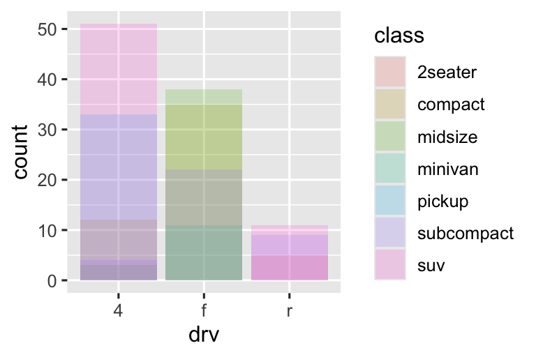
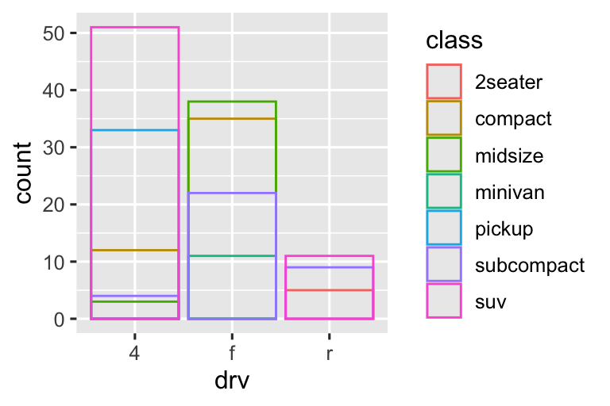
“identity”位置调整对于二维几何对象（如点）更为有用，它是这些对象的默认设置。position = "fill"的作用类似于堆叠，但会使每组堆叠的条形具有相同的高度。这 使得比较各组之间的比例更容易。position = "dodge"将重叠的对象直接并排放置，这使得比较各个值更容易。# Left ggplot(mpg, aes(x = drv, fill = class)) + geom_bar(position = "fill") # Right ggplot(mpg, aes(x = drv, fill = class)) + geom_bar(position = "dodge")![On the left, segmented bar chart of drive types of cars, where each bar is filled with colors for the levels of class. Height of each bar is 1 and heights of the colored segments represent the proportions of cars with a given class level within a given drive type. On the right, dodged bar chart of drive types of cars. Dodged bars are grouped by levels of drive type. Within each group bars represent each level of class. Some classes are represented within some drive types and not represented in others, resulting in unequal number of bars within each group. Heights of these bars represent the number of cars with a given level of drive type and class.](layers_files/figure-html/unnamed-chunk-37-1.png)
![On the left, segmented bar chart of drive types of cars, where each bar is filled with colors for the levels of class. Height of each bar is 1 and heights of the colored segments represent the proportions of cars with a given class level within a given drive type. On the right, dodged bar chart of drive types of cars. Dodged bars are grouped by levels of drive type. Within each group bars represent each level of class. Some classes are represented within some drive types and not represented in others, resulting in unequal number of bars within each group. Heights of these bars represent the number of cars with a given level of drive type and class.](layers_files/figure-html/unnamed-chunk-37-2.png)
还有一种调整不适用于条形图，但对散点图非常有用。回 想我们的第一个散点图。你 有没有注意到，尽管数据集中有234个观测值，但图中只显示了126个点？
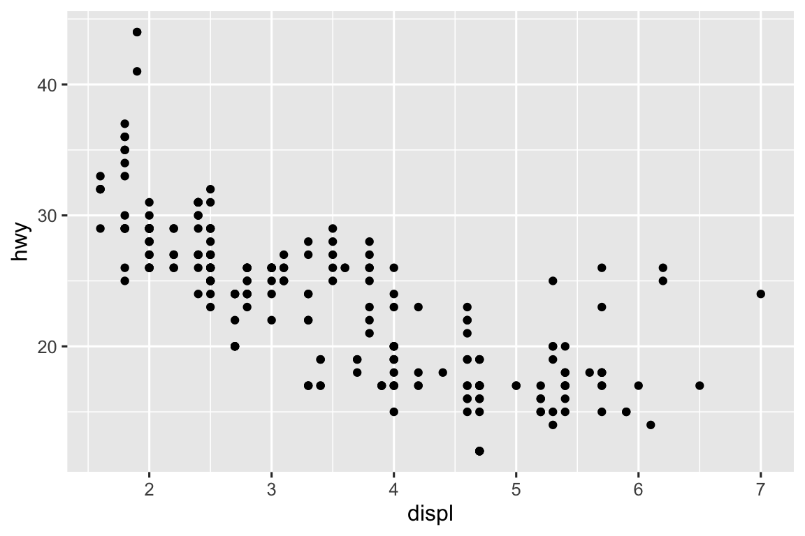
hwy和displ的基础值被四舍五入，因此点显示在一个网格上，许多点互相重叠。这 个问题被称为过度绘制（overplotting）。这 种布局使得很难看到数据的分布。数 据点在整个图中是均匀分布的吗，还是hwy和displ的某个特殊组合包含了109个值？
你可以通过设置位置调整为 “jitter” 来避免这种网格化。p osition = "jitter"会给每个点添加一小部分随机噪声。这 会将点分散开来，因为两个点不太可能获得相同数量的随机噪声。
ggplot(mpg, aes(x = displ, y = hwy)) +
geom_point(position = "jitter")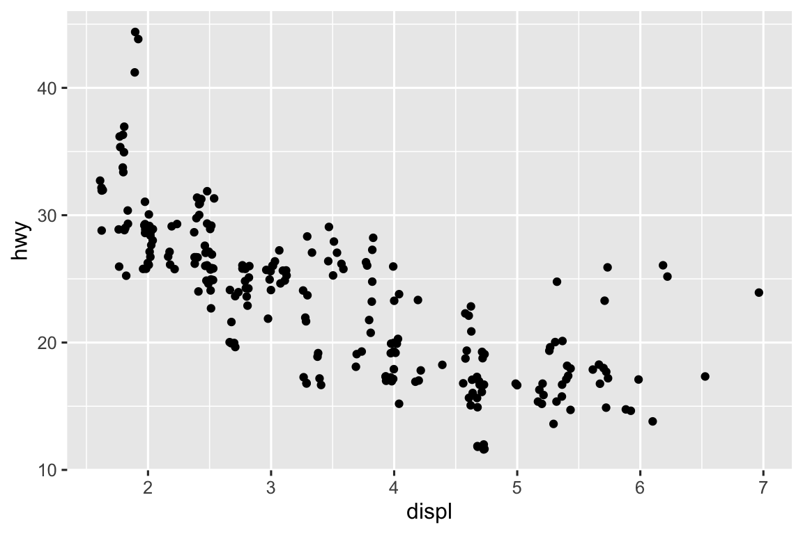
添加随机性似乎是一种奇怪的改进图表的方式，但尽管它在小范围内降低了图形的准确性，但在大范围内却使图形更清晰。由 于这是一种非常有用的操作，ggplot2 为geom_point(position = "jitter")提供了一个简写形式：geom_jitter()。
要了解更多关于位置调整的信息，请查阅与每个调整相关的帮助页面：?position_dodge、?position_fill、?position_identity、?position_jitter 和 ?position_stack。
9.6.1 练习
下面的图有什么问题？如 何改进它？
ggplot(mpg, aes(x = cty, y = hwy)) + geom_point()这两个图之间有什么区别（如果有的话）？为 什么？
ggplot(mpg, aes(x = displ, y = hwy)) + geom_point() ggplot(mpg, aes(x = displ, y = hwy)) + geom_point(position = "identity")geom_jitter()中的哪些参数控制抖动量（amount of jittering）？将
geom_jitter()与geom_count()进行比较和对比。geom_boxplot()的默认位置调整是什么？使 用mpg数据集创建一个可视化来展示它。
9.7 坐标系
坐标系可能是 ggplot2 中最复杂的部分。默 认的坐标系是笛卡尔坐标系，其中 x 和 y 位置独立地确定每个点的位置。还 有另外两种坐标系在某些情况下也很有用。
coord_quickmap()为地理地图设置了正确的纵横比。如 果你使用 ggplot2 绘制空间数据，这一点非常重要。本 书中没有空间讨论地图，但你可以在《ggplot2: Elegant graphics for data analysis》一书的Maps chapter 中了解更多信息。nz <- map_data("nz") ggplot(nz, aes(x = long, y = lat, group = group)) + geom_polygon(fill = "white", color = "black") ggplot(nz, aes(x = long, y = lat, group = group)) + geom_polygon(fill = "white", color = "black") + coord_quickmap()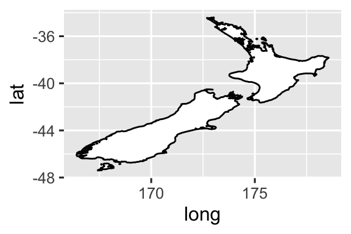
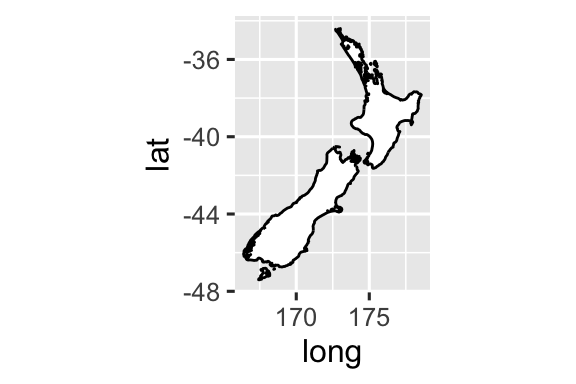
coord_polar()使用极坐标系。极 坐标系揭示了条形图和扇形图（Coxcomb chart）之间一个有趣的联系。bar <- ggplot(data = diamonds) + geom_bar( mapping = aes(x = clarity, fill = clarity), show.legend = FALSE, width = 1 ) + theme(aspect.ratio = 1) bar + coord_flip() bar + coord_polar()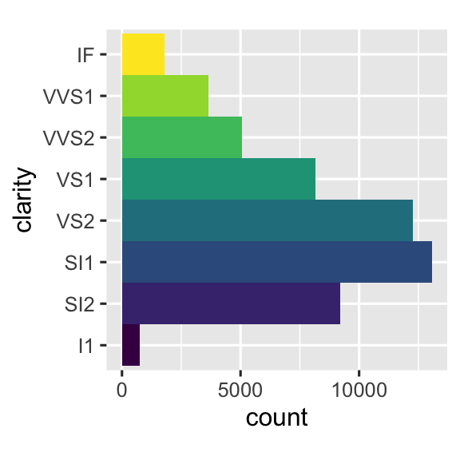
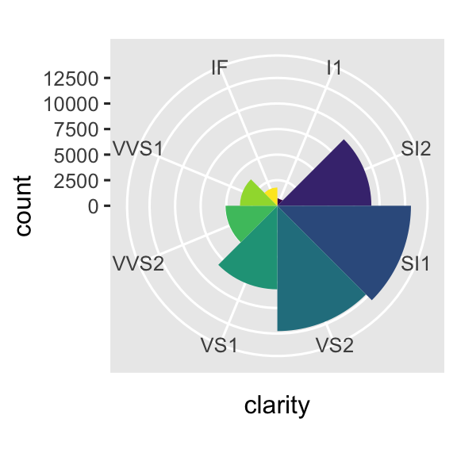
9.7.1 练习
使用
coord_polar()将堆叠的条形图转换为饼状图。coord_quickmap()和coord_map()之间的区别是什么？下图告诉你city和高速公路mpg之间的关系是什么？为 什么
coord_fixed()很重要？geom_abline()的作用什么？ggplot(data = mpg, mapping = aes(x = cty, y = hwy)) + geom_point() + geom_abline() + coord_fixed()
9.8 图形的分层语法
我们可以通过添加位置调整、统计量、坐标系和分面来扩展你在@sec-ggplot2-calls 学到的绘图模板：
ggplot(data = <DATA>) +
<GEOM_FUNCTION>(
mapping = aes(<MAPPINGS>),
stat = <STAT>,
position = <POSITION>
) +
<COORDINATE_FUNCTION> +
<FACET_FUNCTION>我们的新模板需要七个参数，即模板中出现的括号中的词。在 实践中，你很少需要为制作图形提供所有七个参数，因为 ggplot2 会为除了数据、映射和 geom 函数之外的所有内容提供有用的默认值。
模板中的七个参数构成了图形的语法（grammar of graphics），这是一个用于构建图形的正式系统。图 形的语法基于这样一个见解：你可以将任何图形唯一地描述为数据集、geom、一组映射、统计量、位置调整、坐标系、分面方案和主题的组合。
为了了解这是如何工作的，请考虑如何从零开始构建一个基本的图形：你可以从一个数据集开始，然后将其转换为你想要显示的信息（使用统计量）。接 下来，你可以选择一个几何对象来表示转换后数据中的每个观测值。然 后，你可以使用 geom 的美学属性来表示数据中的变量。你 可以将每个变量的值映射到美学的水平。这 些步骤在 图 9.3 中进行了说明。然 后，你会选择一个坐标系来放置 geom，使用对象的位置（它本身也是一个美学属性）来显示 x 和 y 变量的值。

在这一点上，你将拥有一个完整的图形，但你可以进一步调整 geom 在坐标系内的位置（位置调整）或将图形拆分为子图（分面）。你 还可以通过添加一个或多个附加层来扩展图形，其中每个附加层都使用数据集、geom、一组映射、统计量和位置调整。
你可以使用这种方法来构建你想象中的任何图形。换 句话说，你可以使用本章中学习的代码模板来构建数十万个独特的图形。
如果你想了解更多关于 ggplot2 的理论基础，你可能会喜欢阅读《The Layered Grammar of Graphics》这篇科学论文，它详细描述了 ggplot2 的理论。
9.9 小结
在本章中，你从美学和几何图形开始学习了图形的分层语法，以构建简单的图形、通过分面将图形拆分为子集、通过统计量了解 geom 是如何计算的、通过位置调整控制 geom 可能重叠时的位置细节，以及通过坐标系统从根本上改变 x 和 y 的含义。我 们尚未涉及的一个层次是主题（theme），我们将在 小节 11.5 中介绍。
两个非常有用的资源可以帮助你全面了解 ggplot2 的完整功能，分别是 ggplot2 速查表（你可以在https://posit.co/resources/cheatsheets找到）和 ggplot2 包网站（https://ggplot2.tidyverse.org./)）。
你应该从本章中学到的一个重要教训是，当你觉得需要 ggplot2 没有提供的 geom 时，最好先查看是否有人已经通过创建提供该 geom 的 ggplot2 扩展包来解决了你的问题。